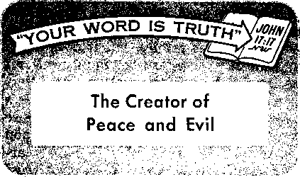

The churches merging—is it right or wrong?
One of the world’s most rapidly progressing lands
Co-operation, not competition, makes for marital happiness
News Bources that are able to keep you awake to the vital Issues of our time* must be unfettered by censorship and selfish Interests. "Awake!" has no fettem It recognize? facts, faces facta; Is fires to publish facts. It is not bound by political ambitions or obligations; it is unhampered by advertisers whose toes must not be trodden on; it is unprejudiced by traditional creeds. This Journal keeps itself free that it may speak freely to you. But it does not abuse its freedom. It maintains integrity to truth.
"Awake!" uses the regular news channels, but U not dependent on them. Its own correspondents are on all continents, in scores of nations. From the four corners of the earth their uncensored, on *the-scenes reports come to you through these columns. This Journal’s viewpoint is not narrow, but is international. It is read in many nations, in many languages, by persons of all ages. Through its pages many fields of knowledge pass in review—government, commerce, religion, history, geography, science, social conditions, natural wonders—why, its cover page is as broad as the earth and as high as the heavens,
“Awake!” pledges itself to righteous principles, to exposing hidden foes and Subtle dangers, to championing freedom for all, to comforting moymers and strengthening those disheartened by the failures of a delinquent world, reflecting sure hope for the establishment of a righteous New World.
Get acquainted with “Awake!*’ keep awake by reading “Awake!"
Published Semimonthly by WATCHTOWER BIBLE AND TRACT SOCIETY, INC.
117 Adams Street Brooklyn 1, N. Y+, UP S, A.
N. H. Knorr, President Grant Suiter, Secretary
Printino this issue: 1,250,000
Five cents a copy
Remittances should be sent to office in your country In compliance with regulations; to guarantee safe delivery of money. Remittances are accepted at Brooklyn from countries where no office is located, by International money order only. Subscription rates in different countries art hen stated In local currency, Notice of expiration (with renewal blank) is sent at least two issues before [nrtwcrlptlon expires. Cbanie of address when sent to our office may be expected effective within one month. Send your old as well as new address.
Act of March 3, 1870. Printed 1.
Languages in which the journal is published: Semimonthly—Afrikaans, English, Finnish, French, German, Moldavian, Norwegian, Spanish, Swedish. Monthly—Danish, Greek, Portuguese, Ukrainian.
Mtees Yearly mbreriplion Rate
Australia, U.S. 117 Arians St,, Brooklyn 1, N.Y, (1 Australia, 11 Burwood Bd., Strathfield, N.S.W., or Canada, to Irwin At*., Toronto 5, Ontario SI En*lM<, 34 Cnren Terrace, London, W. 2 7 s
South Africa, Print* Bag, P.O. Box, Braamfontein,
Transvaal ?»
Entered as second -class matter at Brooklyn, X. Y
CONTENTS
The Christian’s View of Religious Unity 5
The World Council Aims at
Swedish Radio Censors Religion
Playing the Woman’s Role and Liking It 21
A World Without Insects Desirable?
"Your Word Is Truth”
Jehovah’s Witnesses Preach in
Volume XXV
Brooklyn, N. Y., August 8, 1954
Number 18
T3DAY there is an urgent need for leadership. Because of its lack both the rulers and the common people are beset by doubt, fear, suspicion and anxiety. And in no place on earth is this lack of leadership more apparent than in Washington, D.C., the capital of the United States, which nation claims world leadership for itself. Concerning this need of leadership in Washington the Sunday editor of the New York Times recently said:
“To the visitor who comes to the capital these days, seeking light and possible leading, all of Washington seems a kind of Foggy Bottom. He encounters mists of uncertainty, clouds of suspicion, shadows of fear. What is foremost clear is that we are possessed in these difficult days by two great fears: the fear of depression and the fear of communism. There is a vast yearning for leadership. The nation is worried and this worry is reflected in the capital.”
Concerning this need for leadership the editor, Lester Markel, went on to say: “Leadership is needed to state and restate the great truths that have been obscured by the fogs; to bring light into the dark areas of ignorance and the darker areas of prejudice. A leader... must decide what is, according to his best judgment, the right course and he must follow that course regardless of the findings of the polls or the cries of the commentators,” Markel also observed that today there is no “Moses who can lead us through the Red Sea of communism.” Everyone that is at all familiar with the fear, suspicion, uncertainty and confusion that have been created in Washington by the triple threat of communism, McCarthyism and economic depression will certainly agree with the foregoing as to the lack of leadership.
Nor is there a lack only of political leadership. The lack of religious leadership is also obvious to all well-informed observers, such as Harvard president Nathan M. Pusey.,Speaking at the opening convocation of Harvard's Divinity School he said that “there is an almost desperate urgency” for fresh and convincing religious leadership to counteract the widespread lack of religious knowledge and faith. “We have not been well taught about religion, and there is as a consequence a very widespread religious illiteracy and corresponding little religious practice.” He stressed the lack of faith,—The News, Newport, Rhode Island, September 30, 1953.
Why all this lack of leadership? Why are the political leaders of the world unable to bring the people out of ‘the mists of uncertainty, the clouds of suspicion and the shadows of fear'? And why have the religious leaders failed to teach the people well about religion? Evidently because, in the words of editor Markel, they have failed “to state and restate the great truths.” For this failure they are without excuse.
Without excuse? Yes, for those truths are forcefully stated in the Bible, the Book having a wider circulation than any other, barring none. And that Book has been made understandable by the witnesses of Jehovah who daily use every means of communication at their disposal to bring that understanding to the attention of all, high and low. In fact, no one has been in better position to gain an understanding of these Bible truths than the president of the United States, who for many years had them brought to his attention by his own mother, who was one of Jehovah’s witnesses. Oh yes, give the Bible lip service —but to take its principles seriously, to study to understand its teachings and prophecies, that is another matter!
Why, even the religious leaders who profess to be Christian assure the people that the principles of the Bible cannot be applied to a modem age and that were anyone rash enough to try to do so he would land in a mental institution. So to where do leaders look? People magazine tells us:
“Capital Astrologers: Top Leaders Seek Her Advice—Jeanne’s Callers Include Mamie Eisenhower, Washington Officials. In a Washington that constantly scans the horizon for what’s ahead, Jeanne Dixon stands out like a beacon. Using a crystal ball, she has looked into the future, come up with so many astoundingly accurate predictions that today some of the capital’s top leaders and businessmen call on her regularly.”—March 10,1954.
This astrologer may be able to guess certain political and economic events of the immediate future but is she able wisely to advise those who come to her as to what they should do about it? Would there be a “Foggy Bottom” condition in Washington if she were really able to help Mamie Eisenhower and the top officials that come to her? No, she cannot supply the solution, she cannot point her callers to the way out, and least of all can she furnish any protection from Jehovah’s wrath, which his Word shows will soon be expressed against all those who ignore it.
Highlighting the folly of those who seek safety by consulting such astrologers are the words of Isaiah, written some three thousand years ago: “You have wearied yourself with your many counselors, now let them stand up and save you—those who map out the heavens, and gaze at the stars, and tell you month by month what fortune will come to you. Lo! they have become like stubble, the fire bums them; they cannot save themselves” nor those who come to them for counsel.—Isaiah 47:13-15, An Amer. Trans.
Jeremiah wrote like fitting words: “The wise men are put to shame, they are dismayed and taken: lo, they have rejected the word of Jehovah; and what manner of wisdom is in them?” Leaders who look to an astrologer for light instead of to God’s Word are blind. And if the blind lead the blind both will fall into the ditch.—Jeremiah 8:9, Am. Stan. Ver.; Matthew 15:14.
There is an able Leader at hand, a modern Moses to whom the people can turn if they will but look in their Bibles, the Greater Moses, whom Peter identified as Christ Jesus. Jehovah has put his spirit upon him and “he shall bring forth justice to the nations.” He will not only lead the peoples through the ‘Red menace of communism’ but also dry up that menace altogether, at the same time ending such other threats to man’s freedom as McCarthyism, fascism, totalitarianism and economic depressions. Why, this Leader will even do away with sickness, pain and death, and with man’s invisible enemies, Satan and his demons. Yes, look to this Witness, who is Jehovah’s Leader and Commander for the peoples, and “cease trusting man, in whose nostrils is breath; for of what account is he?” —Isaiah 42:1; 2:22, An Amer. Trans.
Why are today's religions apparently more concerned with Interdenominational unity than with doctrinal purity, more concerned with rite than with truth? Why do the various denominations want to get together with other organizations that teach different doctrines? And what should it mean to you? These important questions are hen discussed.
WWhen nations feel that they are not strong enough to withstand their enemies they make alliances with other nations to gain the greater power of mutual strength. When an individual’s problems are too big for him to overcome alone he seeks help from others, the strength of unity. The religions, too, are seeking unity, forming councils, because even they feel incapable of successfully attacking their problems.
The strongest force behind this unity was the huge size of the missionary fields that the religions faced, and the fact that missionaries felt incapable of doing the job alone. Thus it has been said that political threats to religious and missionary freedom galvanized Protestant missionary societies into collective action. This unity of activity eventually led to the establishment of the World Council of Churches. That World Council is their organ of united expression, of mutual cooperation and action. Yet, though united in activity, religions still maintain their doctrinal differences. But is not doctrine an integral part of Christianity? Are the denominations at liberty, after merely acknowledging Jesus’ name, to go any way they wish, taking various denominational paths, disagreeing on basic doctrines? dividing over what Christianity means? preaching different requirements to different people? No! The Christian principle is very narrow-minded as far as doctrine goes. Paul wrote: “Even if we or an angel out of heaven were to declare to you as good news something beyond what we declared to you as good news, let him be accursed.”—Galatians 1:8.*
Christendom's Divided House
However, the so-called Christian religions in general have accepted many new things beyond what Christ and the apostles declared. They have not held to that narrow way of true doctrine. They claim that their multigabled house of divided doctrine is based on the solid foundation of Jesus Christ, while actually its vast wings have spread out to cover an enormous mound of decaying rubble borrowed from paganism. Room after room has been added,
*ln this article texts from the Greek Scriptures ("New Testament") are quoted from the New World Translation, and, unless otherwise noted, those from the Hebrew Scriptures ("Old Testament”) are quoted from the American Standard Version.
each denomination bringing in its own peculiar architecture of ritual and pattern of creedal dogma. Having spread ever farther from its original foundation, the structure of Christendom’s divided house has become weaker, its cracks wider and its divisions evident to even the casual passer-by.
But rather than tearing down the part that was not really built on Christ, the ecumenical movement now endeavors to patch up the whole building and to construct a false front of unity that will conceal the house’s structural weaknesses and architectural imperfections, giving the casual viewer the false impression that the narrow base of true Christianity is broad enough to support the conflicting doctrines of all these divided denominations.
They have high hopes for their structure, but the psalmist reminds us: “Except Jehovah build the house, they labor in vain that build it: except Jehovah keep the city, the watchman waketh but in vain.” (Psalm 127:1) What is his view toward these current attempts to unite Christendom’s divided house ? The Bible shows that Jehovah does not approve of alliances between right and wrong doctrines, and since these doctrines contradict each other some of them must be wrong. Those who would add improper things into Christianity were reminded by Paul that “a little yeast ferments the whole lump.” (1 Corinthians 5:6) Also, Isaiah 29:13 describes with disfavor those who draw near God with their mouth and honor him with their lips, but whose fear toward him is “a commandment of men.” It is these ideas and commandments of men that have prompted denominational divisions, and as long as they continue to teach such contradictory commands their merely claiming the name “Christian” will save neither them nor their interdenominational organization. Remember, Jesus warned: “Not everyone saying to me, ‘Master, Master,’ will enter into the kingdom of the heavens.”—Matthew 7:21.
The Urge to Merge
“God is a.God, not of disorder, but of peace,” and the right way of determining true doctrine is in the way he set out, through the Word he has had written for us, namely the Bible. (1 Corinthians 14:33) Apparently, however, some of the people who propose religious unity care very little about what God has said on the matter. While boasting that their unity is Godgiven, their concern is not with “What is truth?” but “How can we merge?” Thus, Charles Clayton Morrison said in The Christian Century, January 13, that he thinks “Christian unity need not wait upon the solution of the theological problems which bulk so large in the World Council program,” but that the question should be: “How can a united church be achieved, under Christ, which welcomes and embraces our differences?” The answer is simple, Under Christ it cannot. To be under Christ it must teach what he taught, rather than embrace the doctrinal differences that man has invented.
Proponents of the ecumenical movement remind us that there is just one gospel. In that they are right, but which one of these many denominations has it? The ecumenical movement thinks that they all do, but this is impossible, because that one gospel is not divided as many different ways as they are. The ecumenical movement takes as a theme text Christ's prayer, “That they may all be one,” but this entire text from John 17:21 shows that this oneness was as Jesus and the Father are one, and no one has yet shown where Jesus and the Father were at odds on matters of doctrine! The oneness obviously must be in truth, not just in organization.
In The Reformed Theological Review, published in Melbourne, Australia, Febru-
ary, 1954, one clergyman pointed out that the members of the World Council are so divided on doctrine that they have different opinions of what that organization’s requirement for membership means when it says its churches recognize "Jesus Christ as God and Saviour.” Some modem Protestants, members of the World Council, deny the virgin birth of Christ, while other denominations, also World Council members, would consider this denial heresy. Another example of their division: “Supposing the Reformation was right in its judgment on the sacrifice of the mass, how can a Lutheran or a Presbyterian encourage the celebration of such mass? How can, on the other hand, an Orthodox or an Anglo-Catholic encourage a celebration which he must regard as an adulteration of the true sacrament?” Obviously not both views can possibly be right.
The Narrow Christian Way
It would be impossible for an informed person to imagine Jesus associating with and lending support to those who taught false doctrine. It was the human traditions, the doctrines and ideas of men, that had split the Jews in Jesus’ day into various sects and had gotten them off the narrow way of pure worship. Jesus, far from associating with them, told the religious leaders who were teaching these divided doctrines: “You are from your father the Devil.” He called them hypocrites, blind guides, fools, said they were “serpents, offspring of vipers,” "full of hypocrisy and lawlessness.” He said he “came to cause division,” even splitting families over the difference between true and false worship. He said: “He that is not on my side is against me, and he that does not gather with me scatters.” He showed that no lukewarm attitude is sufficient for his followers: “I know your deeds, that you are neither cold nor hot. I wish you were cold or =.se hot. So, because you are lukewarm and neither hot nor cold, I am going to vomit you out of my mouth.”—John 8:44; Matthew 23; 10:35; 12:30; Revelation 3:15, 16.
The Christian way is narrow, not broad enough to cover the interdenominational activity of the world's church councils. The organizations that make up these councils have a zeal for God, but it is misdirected. Their concern is with unifying their organizations, rather than with seeing what is right and actually subjecting their ideas to the truth of God’s Word. They are like those Paul described; "For I bear them witness that they have a zeal for God; but not according to accurate knowledge; for, because of not knowing the righteousness of God but seeking to establish their own, they did not subject themselves to the righteousness of God.”—Romans 10:2, 3.
True Guide Ignored
In discussing the attempts at religious unity, Dr. William Adams Brown, in Toward a United Church, page 43, said that one attempt was made to unite the churches through a return to Bible principles, but, "unfortunately, it soon appeared that those who agreed in accepting the New Testament as their final authority differed as to what its teaching actually was.” But was that the Bible’s fault? Or was it their determination to hold to their previously conceived opinions that prevented them from agreeing on what the Bible said?
Men spell alike because they accept the dictionary as an authority. But these same men, who will conform their spelling to dictionaries that men wrote, will not conform their doctrines to the Bible that God inspired. Their refusal to conform to the Scriptures as final authority, and to come to unity on the basis of what the Scrip-
AUGUST 8, 1954
tures say, must of necessity betray as false their claim to be Christian, because those Scriptures certainly are the record of what Christ taught and what first-century Christianity and its true worship were before they became corrupted and split into so many different ways. The Bible, therefore, is the Christian’s authority, it must take precedence over all creeds.
Paul wrote to Timothy: “All Scripture is inspired of God and beneficial for teaching, for reproving, for setting things straight, for disciplining in righteousness, that the man of God may be fully competent, completely equipped for every good work.” Today’s religious leaders, however, have become like rowdy children that rebel, each going his own way, rather than like properly disciplined children, orderly in their obedience.—2 Timothy 3:16, 17*
There is no reason for this lack of doctrinal unity. Christ is not divided and he is ever present to teach those who are really his, having promised: “For where there are two or three met together-in my name, there I am in their midst.” (Matthew 18:20; 1 Corinthians 1:12, 13) The fact that their religious organizations are divided indicates that despite their loud claims of being Christian Jesus does not consider their gatherings to be 'in his name/ The holy spirit’s hand is not short today, but their vastly contradicting doctrines indicate that that spirit is not upon them, that they are inventing their own ideas instead of following its leading.
True Guide Applied
Those who have an accurate knowledge and have God’s spirit behind them do not need a tremendous organization to accomplish their work successfully. Their confidence, like that of Christ and the comparatively small group of early apostles and disciples, is not in huge numbers of people, but is in the power of Jehovah God.
Those who really are doing a work that is supported by God do not need to compromise their principles to get a huge voting block or pressure group to look out for their interests. Like the psalmist they say: “In God have I put my trust.” (Psalm 56:11) And it works. When confidence is placed there, a tremendous organization is not needed*
It enables a relatively small group like Jehovah’s witnesses to stand firm in Com-munist lands, while other organizations with far greater numbers capitulate to the Communist rulers. It enabled them to stand firm for more than ten years in Germany, while the other far larger religious groups went along with the Nazi state. It enables them to press forward in missionary work on a world scope, without the need for mutual aid that these other religions manifest. Pathfinder spoke of their “small but vigorous bands.” Zealandia, of Auckland, New Zealand, shamed its Catholic readers by saying that though Jehovah’s witnesses are a minority “nobody ever accused them of keeping quiet about their beliefs,” Life said: “Of U. S. missions in Africa, not the least influential are Jehovah’s witnesses. ’ ’ The Pentecostal Evangel said regarding the Witnesses’ activity in Africa: “They are pressing in everywhere.”
The general confusion of doctrine that exists among today’s so-called Christian religions does not exist among this group, for they simply follow God’s Word, like the. psalmist who said: “Thy word is a lamp unto my feet, and light unto my path?’ (Psalm 119:105) They want unity, but only with those who will accept and conform their beliefs and actions to God's truth, not with others who refuse to do so, whether the others call themselves “Christian” or not.
Thus Jehovah’s witnesses avoid interdenominational houses which are not of
God’s building, having seen that, though the various denominations often look alike from the outside, a study of the Bible, the blueprint according to which they should have been constructed, shows misfit construction, false fronts and showy windows foreign to plan. It is because of this improper construction that their weakness has now reached the point that these denominations must lean for self-support on others whose doctrines they despise. But the Christian’s support is from above, from Jehovah. He will hold clear of association with those who lawlessly follow different doctrines, and will follow the divine command: “Do not become unevenly yoked with unbelievers. For what partnership do righteousness and lawlessness have? Or what fellowship does light have with darkness? ‘ “Therefore get out from among them, and separate yourselves,” says Jehovah, “and quit touching the unclean thing,” ’ ’ “and I will take you in,” ’ ” —2 Corinthians 6:14, 17.
The right course is to find out what God's Word says, to study it yourself, to take no man’s word, but to prove the matter unquestionably. That is the course the Watch Tower Society has taken, going back to the Scriptures to see what true worship really was before interfaith activity with paganism so corrupted it, It is getting back to the pure first-century Christianity, to the principles Christ actually taught, and it is receiving Jehovah’s rich blessings for doing so. Now that the denominations of this old world continue to take the wrong course of amalgamating with those who teach different doctrines, you are invited to change your course and to join with the vast multitudes who are separating from this old world’s religions and associating with Jehovah’s witnesses in this right , activity.
THE WORLD COUNCIL AIMS AT
RELIGIOUS UNITY
The Christian’s view toward this month’s assembly at Evanston
SOMETHING new has happened in our time. Within just over four decades the major Protestant and Orthodox religious denominations have come together into a permanent council, the World Council of Churches, which first met in Amsterdam, Holland, in 1948. The World Council’s second meeting will be a major news event when it is held this month at Northwestern University in Evanston, Illinois, U. S. A.
The World Council is part of a movement for religious unity, a movement whose ultimate goal is an all-embracing unification of at least the non-Roman part of Christendom. Called the Ecumenical Movement (“ecumenical” means “catholic, universal, world-wide”), this interdenominational activity developed from the nineteenth-century missionary and youth movements and the twentieth-century church conferences that were discussed in this magazine’s July 22 issue.
The World Council’s second assembly, August 15-31, will be an interdenominational gathering of representatives of almost all of Christendom except Roman Catholicism, which refrains from participating. Representatives from 161 member
churches in 48 countries are expected. Participating in the “Opening Service of Worship,” for example, will be Britain’s archbishop of Canterbury, a bishop of the Church of Norway, a representative of the Reformed Church of France, two Methodist representatives from the United States, and the archbishop of Thyateira, Metropolitan Athanagoras of the patriarchate of Constantinople. At this assembly these clergymen and those of many other denominations will be united in a wide scope of interdenominational fellowship.
The Theme
What will they discuss? Their theme is: “Christ—The Hope of the World," and their central task will be to come to an agreement and to issue a statement on what they consider to be the Christian hope for today’s world. This is not an easy task, for the degree of doctrinal division among these men is tremendous. The American viewpoint leans toward political problems, while the European view leans toward theological formulations. Many European clergymen think the return of Christ is the hope for the world; many American clergymen think that their efforts to institute right principles into social and political life present this hope.
One view was expressed by Swiss theologian Karl Barth at the World Council’s first assembly: “We are not the ones to change this evil world into a good one. God has not resigned His Lordship over it Into our hands ... By God’s design is not meant something like a Christian Marshall plan.” The other view, as stated in The Christian Century of January 27, includes those whose hope is no longer based upon the promises of Christ’s second coming, “and who would gladly delete it from the creeds and liturgies if not from the New Testament itself.” How will these clergymen, so widely divided in viewpoint, come to unity on stating hpw they think Christ is the hope of the world? The most apparent solution would be for them to accept some statement that so ignores the issue and so thoroughly holds to a middle ground that both sides can agree to it, expressing amazement at the extent of their unity, while not changing their contradictory viewpoints one iota.
Subtopics must also be considered. The first, “Faith and Order: Our Unity in Christ and Our Disunity as Churches," includes a consideration of the causes of religious division, with the goal, of course, of developing more unity. The second, “Evangelism: The Mission of the Church to Those Outside Her Life,” will include consideration, according to The Christian Century, of “what holds the churches back, and why they cannot break out as the modern apostolic bands Christ intended his church to be.” The third, “Social Questions: The Responsible Society in a World Perspective,” will consider the pressure that is brought upon religion to conform, then to lend strength and support to the prevailing social structures and political aims. Under the fourth subtopic, “International Affairs,” such subjects as the antagonisms between Soviet and non-Soviet societies, the atomic arms race and the U. N. will be considered. A fifth subtopic, “Intergroup Relations,” will take up the world’s racial tensions, and the sixth, “The Laity: The Christian and His Vocation,” will deal with the position of the denominations in the midst of the working world, and what methods and type of work they think the Christian should do.
Thus, seeing that the seventeen-day second assembly of the World Council of Churches has a big job set before it, the question is: How well will it do the job? It is almost certain that controversy will
arise; sharp criticism is to be expected. The problem of interdenominational activity will make some of the clergymen cautious, others impatient. Political issues may cause division, and some disagreements will probably arise on almost every subject. But the simple fact that the religions are getting together in such conferences is considered by many as “the unfolding of a new and promising chapter in church history.”
But will this attempt at unity, this new chapter in church history, be blessed by God? Despite all its impressive numbers and spectacular show, the ecumenical movement’s admitted failure to “break out as the modern apostolic bands Christ intended his church to be” indicates that something is wrong. What its proponents call the “great discrepancy between unity in Christ and disunity in the churches" really raises the question of whether the unity it has is God-given or man-made.
The Background
The Scriptures have a great deal to say about doctrine, but from its earliest beginnings the ecumenical movement has been willing to ignore differences of doctrine when these would prevent the accomplishment of its ends. When the nineteenthcentury student movement sought to develop a “unity which transcends national and denominational lines,” the peak of zeal for one’s doctrines was leveling off. The zeal that had prompted the reformers and various denominational leaders to stand strongly for their beliefs was being lost. More and more they were not Methodist or Baptist or Presbyterian because they had been convinced that that organization, above all others, had right doctrines, but because they were born into it, or converted to it out of convenience, or through other less convincing circumstances than those which had prompted the organization’s founders and early membership.
This view that doctrine was immaterial was brought into the Edinburgh missionary conference tn 1910, the forerunner of the World Council of Churches. From Edinburgh there "sprang a new willingness to respect and recognize wide differences and at the same time to work together . . . Edinburgh launched international, cooperative Christian endeavor on essential tasks without demanding prior theological consensus and by agreeing to hold in abeyance theological differences,” explained William Richey Hogg in Ecumenical Foundations, pages 130,139. From its beginning that conference’s continuation committee was precluded from handling matters that concerned the doctrinal differences of the various denominations. They were to unite in missionary work, each to preach the truth as he saw it, not as investigation might prove it actually was! But since the same doctrine cannot be both true and false at the same time, when two denominations that disagree on doctrine work together in missionary activity, one is- obviously teaching falsehoods, and the other is in an equally dangerous position, supporting it in that teaching, accepting responsibility for the falsehood that is being spread. Thus their “theological differences” should come first, not be held in abeyance; they should find out what really is truth before going out to preach to others.
Other twentieth-century church conferences have similarly erred, have either shunned doctrinal differences altogether, or have approved only those views that everyone could agree upon, ignoring or omitting other relevant facts that are clear in the Scriptures. The World Council of Churches, a descendant of these earlier conferences, continues to repeat the same mistake. Its constitution says: "The World Council of Churches is a fellowship of
churches which accept our Lord Jesus Christ as God and Saviour.” That one statement is the only test for membership. Any other differences in doctrine, worship, organization and ecclesiastical order, whether based on the Bible or borrowed from paganism, are considered to be inconsequential! They boast of their “underlying unity in Jesus Christ,” while ignoring the fact that their branches are so warped, their doctrines so corrupted, that he would not even recognize them!
Toward the Wrong Goal
There are several reasons why the Christian will be very skeptical of such interdenominational efforts as the World Council represents. A folder entitled “Tell Us About the World Council of Churches,” prepared by that organization to explain its purpose, says: “The World Council of Churches is like a compass. It seeks to point the way to fuller understanding between the 158 member churches in 43 countries [now 161 churches in 48 countries] , which make up its membership, and tries to suggest what the church can say to men and women in today’s hectic, atom-charged society.” But the Christian’s primary concern is not unity with 161 denominations; instead, he is concerned with a right understanding of the truth.
“The World Council of Churches is like a family,” the folder continues. “The members have a common loyalty and heritage, but they are not all alike and there is no reason to expect them to be. The many churches and nationalities each bring to the ecumenical move- 1
ment their own historic, academic and spiritual gifts.” But the -w—iL I illustration of a family is the very wrong one for Christianity. Paul who showed that the Christian congregation is like the human body, SSSS all parts working in unity for the benefit of the whole, not like a family which Jesus showed could be divided on doctrine, when he said: “I am come to set a man at variance against his father, and the daughter against her mother, and the daughter in law against her mother in law.” Truth is the important thing, not unity, and Christ showed that division must exist between those who have the truth and those who do not. Anyone who denies this is not following Christ.—Matthew 10:35; 1 Corinthians 12:12-14.
The folder also says: “The World Council of Churches is like a ship.” But the sailors on this ship have mutinied. “We’re still following the captain,” they protest; yet we hear them say: “He said, ‘Go east,’ so let us go west." “No," another intersperses, “I think north is best.” Others say: “Why not south? Does it matter so long as we all still say we are sailing in his name?” Yes, the World Council is like this ship that, while claiming to sail in Christ’s . name, is more concerned with the fellowship among mutinous sailors than about the true course God’s Word established.
What should one do about it? The Christian must shun interdenominational or interfaith activity entirely, looking instead to true faith. He must resist the tendency to lean on his own ideas, or to put too much confidence in denominational creeds made by men, and should take the wiser course of studying and trusting in the Word that was provided by God, the Bible. Its principles are sound, they are sure. They do not say that just any religion is right, I or that we should unify with
with those who preach other doc
trines, just to get a big organization. What it does say about this matter, however, is very much to the point, and is the subject SSSE of the preceding article.
the
By "Awake!" correspondent in Canada
to France, Germany and Spain combined.
The foregoing figures, however, may be somewhat misleading, for much of
CONTEMPLATE, if you can, a land greater in area than the entire continent of Europe, a land whose mineral wealth is so incredible it has never been systematically surveyed, a land where immigrants are welcome, a land where Jehovah God’s goodness is so bountiful that the annual wheat production alone would feed 100 million people, a land where fruit, fish, vegetables, meat and poultry would feed millions more, a land where the majestic grandeur of mountains, forests, lakes and distances defies adequate description. Yet Canada, this land of superlatives, astounding as it may seem, has only 15 million inhabitants, people whose hopes, welfare and prospects are among the finest this earth has to offer.
Among all the nations only Soviet Russia and China have a land area greater than Canada. The Canadian distances are staggering. For example: A person at Victoria, British Columbia, on the west coast is farther away from Canada’s easternmost city, Saint John’s, Newfoundland, than he is from Yokohama, Japan, on the opposite side of the Pacific. A Canadian at Montreal, nearly a thousand miles from the eastern seaboard, is still closer to Liverpool, England, than to Vancouver, British Columbia. Of the ten Canadian provinces, the largest, Quebec, is of itself equal in area
Canada’s northerly territory is uninviting if not actually uninhabitable. The northerly two thirds of the country has less than one per cent of the population. Yukon and the Northwest Territories, an area half as large as the United States, have only 25,000 inhabitants, the equivalent of a moderatesized town. About half of Canada is within the area known as the Laurentian or preCambrian Shield, which stretches from the eastern or Maritime provinces to the Rocky Mountains in the west. Laurentian Shield terrain is generally rough and rocky. It is heavily forested, fabulously rich in minerals and an unparalleled vacationland.
A traveler journeying from the Atlantic to the Pacific would commence in Nova Scotia and New Brunswick. Here a number of fertile valleys relieve the ruggedness of the .woods, lakes and rivers. Continuing westward he would cover many hundreds of miles into southern Ontario and Quebec, where the terrain largely is level, alluvial plains which provide wonderful farm land. Our traveler passing through northern Ontario would see Lake Superior, the largest body of fresh water on earth, actually 350 miles long. From here to the foothills of the Rocky Mountains stretch a thousand miles of the treeless western plains, one of the greatest wheat-growing areas in the world. From the foothills the majestic grandeur of the Rocky Mountains stretches four hundred miles to the Pacific. Some of the most stunning spectacles the Creator has provided for mankind are found among these mighty peaks. Their immensity and beauty beggar description. Colossal jagged summits, like the skeleton of a gigantic dinosaur, reach heavenward; eternal snows are on their heads; fresh and delightful blue-green mountain lakes, fed by age-old glaciers, mirror the glory of the snowladen peaks. Surrounded by such marvels, a man is overwhelmed by his own insignificance before the almighty Creator, Jehovah, who conceived and brought forth such magnificence.
Apart from the breath-taking beauty of the Rockies, the visitor is also charmed by the many wild creatures: friendly black bears, fierce grizzlies, mountain lions, moose, bighorn sheep and a host of others. Minerals, waterfalls, rich mountain valleys and some of the finest virgin timber in the world are to be found here. Yes, here Jehovah God has dealt with a lavish hand both in wealth and beauty. The traveler would then inch his way down the slopes of the Rockies to the shores of British Columbia and the Pacific.
History and Government
Canada was first settled at the beginning of the seventeenth century by the French, and the land was known as New France. The chief settlements were on the banks of the St. Lawrence River in what is now the province of Quebec. French power in North America was broken at the Battle of Quebec in 1759 when the British under General Wolfe defeated the French. The first four Canadian provinces were federated in 1867 by the British North America Act. By 1905 nine provinces had entered the confederation and the tenth province, Newfoundland, became part of Canada only in 1949.
The British North America Act of 1867 made Canada a self-governing dominion, but she was still subject in some ways to the law of Great Britain. The Statute of Westminster, 1931, removed these restrictions and recognized the dominions as “autonomous communities, equal in status, and freely associated as members of the British Commonwealth of Nations.” Canadian ties with Britain now arise chiefly from common allegiance to the Crown. That these ties are nonetheless strong is proved by the tremendous effort Canada made in two world wars to assist the mother country.
The government of Canada is very stable. It has never been overturned or seriously threatened by rebellion. There has not been a semblance of war in Canada since 1814, when there was a brief war with the United States. No guns are mounted anywhere along the almost 4,000 miles of the Canada-United States border. The amicable relations between the two countries are a lesson in good manners to many others.
People and Culture
Many who have learned about Canada through the cinema believe the country is full of Indians, wolves, dogsleds and red-coated Mounted Police. In fact, most Canadians have never seen a wolf outside a zoo. Even the Mounted Police do not wear red uniforms except at parades or as a tourist attraction. “Mounted” is now only a name; few ever use horses. Indians form an inconspicuous part of the population; dog teams have been largely replaced by airplanes and caterpillar tractors that pull sled-trains across the frozen tundra.
Canada has a highly developed civilization with all its attendant features good and bad. The two largest cities, Montreal and Toronto, have each more than a million inhabitants. In the entire British Commonwealth Toronto has the highest building, the biggest hotel, the largest university, and it now has a new subway system —the seventh underground transit system in North America. One third of Canada’s market is within a hundred miles of Toronto, one of the most prosperous communities on the continent.
Montreal is a little larger than Toronto, more cosmopolitan and far more a city of entertainment. Quebec City, capital of the French-controlled province of Quebec, is the only walled city in North America. The present wall and battlements were built in the early nineteenth century following the Napoleonic wars, Quebec is an interesting city. Its 164,000 inhabitants are ninety-seven per cent French speaking. The old, narrow streets are reminiscent of the older quarters of Paris or Rome. And there is a host of other beautiful cities almost too numerous to number. There is Ottawa, the capital of Canada, situated on the Ottawa River; Halifax,' an east-coast seaport; Hamilton, a bustling industrial city; Niagara Falls with its awe-inspiring waterfall; Winnipeg, the gateway to the west; Edmonton, the oil capital of the north; Calgary, a rip-roaring cow town; and Vancouver, the metropolis of the Pacific Coast.
The total Canadian populace has now reached fifteen million, an increase of three million since 1945. The Canadian people in general are tolerant, broadminded and progressive.* They are interested in liberty too. When Jehovah’s witnesses circulated two petitions for a Bill of Rights, more than one million signatures were submitted to Parliament demanding that the basic liberties of the pep-pie be protected. This was an outstanding expression of public opinion in favor of liberty.
In matters of religion the Roman Catholic Church claims to have 43 per cent of the Canadian people on its rolls. The leading Protestant denominations claim 47 per cent. It is admitted, however, by a recent survey in Maclean’s Magazine for December 15, 1953, that these figures are exaggerated by the inclusion of the names of many nominal members. This same publication, mentioning religious progress, declared that “today the greatest gains are being made by Jehovah’s witnesses.”
Agriculture and Industry
Agriculture is Canada’s primary industry and wheat is the greatest single crop. The bumper wheat crop of 1952 came to 687,-900,000 bushels. If this crop were placed in 100-pound sacks and laid end to end, the sacks would stretch 195,426 miles, or almost eight times around the world at the equator.
Lumbering and processing of forest products is Canada’s No. 2 industry. Three out of five pages of the world's newsprint come from Canadian pulp. In the mining field Canada is, for the Western world, the No. 1 producer of nickel, platinum and asbestos. (Soviet figures are unavailable.) Canada is the No. 2 producer of gold and aluminum. Immense iron deposits are now being developed. A giant aluminum development at Kitimat, British Columbia, will make Canada the No. 1 producer of this metal, though the ore will be shipped in from Jamaica. The very valuable metal known as uranium is being produced at
Uranium City and Port Radium in the Northwest Territories.
Canada now ranks Sixth among world industrial producers. Time magazine for February 4, 1952, remarked: “In twelve years, Canada has undergone the most impressive industrial development of any nation in the world, a surge of industry and prosperity that Wall Street’s conservative investment firm of Lehman Bros, calls ‘the biggest business story of this decade.’ ”
All of this development has a useful reflection on the lives of the people. Three out of five Canadian families own an automobile; five out of seven have telephones; nineteen out of twenty have radios. The average income per family of four is $4,000, the highest in the world, and $622 above the corresponding United States’ average. Family allowances are paid by the government to the parents of all children under sixteen years of age; unemployment insurance is provided for those out of work; old-age pensions are paid to all over seventy years of age.
Like every other country, Canada has problems. Her problems, however, are not immediately those of fear, poverty, insecurity or probable Invasion. Her problems are mainly those of expansion, enlargement and development. It is a country that is well governed, well administered, and whose people have above-average benefits. Yet, all this material prosperity does not prevent her people from hearing the good Kingdom message, and seeking after the true and eternal liberty and happiness that can come only through Jehovah God’s kingdom under his Son, Christ Jesus. Thus, more than one out of every 650 persons in Canada is having a part in witnessing for that kingdom, and daily more Canadians are learning how through it enduring peace, happiness and prosperity will come to all peoples of all nations throughout the earth.
PREDICTING WEATHER IN REVERSE
It is a difficult proposition to foretell to-Itnorrow’s weather accurately, but how can Mthe experts deduce what the weather was like thousands of years ago? There are many clues,
<t Neville Richardson, writing for The Star Weekly, Toronto, February 28, 1953, says that by “knowing the climatic requirements of fossils of certain plants and reptiles, the scientists, upon finding these fossils, can determine pretty closely the type of weather prevailing in the days these plants and animals flourished. Analysis of pollen grains is considered to give an accurate picture of past climates. Every year plants shower their particles of pollen upon the ground. In old bogs, these pollen grains have been preserved* Digging down into a bog is like going into the correspondence in your desk drawer* The oldest material is at the bottom. The scientists can determine the species of the pollen with the assistance of caustic hydroxides. At a glance they can tell the relative abundance of pine, hazel, oak, spruce in a certain area at a certain time. They also have a fair idea of the climatic requirement of each of the species*
<■'. “At the present time, corals grow only in warm seas where the temperature never drops below 65 degrees. Presumably ancient corals required similar conditions for development, and so when coral formations are found in Alberta deposits, it can be pretty safely assumed that at one time in history the temperature in that part of Alberta never dropped below 65 degrees. In fact, the rich oil deposits now being developed in Alberta are associated with these formations* Tree rings, salt and clay deposits are also important guides to past climates and are avidly studied by the scholars/'
Be your Own
EOPLE are prone to be weather forecasters. They possess an inherent craving for information about the approaching atmospheric phenomena. The numerous current weath-- . ?er proverbs indicate
this craving. That is why the weather becomes a never-tiring topic of conversation. Everyone likes to talk about the weather. And even in this day and age of modern meteorology, there is no end of those who would match their skill against those experts with their electronic equipment, in an effort to predict tomorrow’s weather.
Before the government began providing a national weather forecasting1 service in 1870 through the army signal corps, everyone interested in the subject had to be his own weatherman. About sundown, the old-timer would glance up at the sky, briefly study the color of the sun, the cloud formations, the direction of the wind, and almost as quickly and as simply as that, he would predict what tomorrow’s weather would be. But to be doubly sure, he would rise early enough to see the sunrise, check again the color of the sun, the kind of clouds in the sky, the rising or falling temperatures, and that is all there was to it—he was confident of what the weather would be for the day. He was his own weatherman.
The simple formula was that the sun would create the weather, the clouds would foretell it and the winds would bring it. No matter what the weather does, he knew that it always lets you know beforehand. For example: If there were quickly moving clouds that lowered and increased in number toward evening, accompanied by a falling barometer, if these same clouds became darker, mushrooming to the top and flattening out in anvil shape, this was a sure sign of a shower in the making. Dark clouds gathering on the horizon windward warned him of rain or snow, A rapidly rising barometer and steady winds indicated clearing skies. A cloudless sunset in winter meant to build up the fire and make sure there were plenty of blankets on the bed. But a hazy, semi-overcast sky in the summer meant a hot, miserable, sleepless night. If birds gathered together in trees or on the ground it meant that a storm was brewing. So the birds were “sitting it out” before a storm. If smoke curled downward and lingered near the earth it was a sign of a nearing storm. A large halo around the moon indicated rain. If the old-timer’s tooth would ache or his wife’s bunion annoyed her, it was a sign of bad weather, that is, if it was caused from a sudden fall in barometric pressure.
The winds also were full of meaning. A sudden change in wind followed by increasing cloudiness called for the umbrella tomorrow. Wind blowing in different directions at different altitudes indicated unsettled conditions. A strong morning wind often meant a change for the worse, as did a sudden rise in winter temperature. If cirrus clouds thickened and lowered it meant that there would be snow or rain within thirty-six hours. Another rule was that in dry weather all signs for rain fail; and in wet, winter months, the converse is true. So you see, the old-timer had his weather forecasting pretty much down to a science all his own.
But today, the business of predicting the weather is almost entirely in the hands of professional meteorologists, except perhaps for a few amateurs here and there who follow the fascinating study as an interesting hobby. The majority of the people of the civilized world, and particularly the modern-day city dweller, get their weather forecast through the morning paper, radio or television. Some take advantage of the telephone and dial the weatherman. But the extent of the average person’s knowledge of meteorology today is mediocre at best.
In ancient times forecasting the weather was done by reading the signs in the sky. The religious Pharisees of Jesus' day were apparently good at it, because Jesus contrasted their lack of spiritual discernment with their ability to predict clear weather and rains: "When evening falls you are accustomed to say, ‘It will be fair weather, for the sky is fire-red’; and at morning, ‘It will be wintry, rainy weather today, for the sky is fire-red, but gloomy-looking.’ You know how to interpret the appearance of the sky, but the signs of the times you cannot interpret.” (Matthew 16:2, 3, New World Trans.) Sailors and farmers, for whom the weather meant existence, became experts at reading the signs in the sky. The general truthfulness of the Pharisaical forecasts has become crystallized in the proverbs: “Red sky at morning, sailor take warning; red sky at night, sailor’s delight”; and “Mackerel sky, quickly wet or quickly dry.”
Meteorologists of today still rely considerably upon the general appearance of the sky in determining the weather’s next move. Of course, they are aided by receipt of observations from weather stations over several thousands of miles, from ships at sea, and by a good many instruments, the most important of which are the wet and dry thermometer, the wind gauge and the barometer, which measures atmospheric pressure.
Recently, the United States Weather Bureau released information about a highspeed electronic weather computer. According to reports the “weather robot” will “by-pass the human equation in Weather predicting. It will take mathematical formulas and in ninety minutes it will turn out an answer from which meteorologists will be able to read temperatures, cloudiness, precipitation, or whatever is going to happen in the realm of weather. If a skilled mathematician tried to solve the numerical data fed through the wires and tubes of the modern computer,” this report says, “he would be at the job seven years.” How accurate will this mechanical wizard-of-a-forecaster be? Dr. Harry Wexler, chief of the Weather Bureau’s Scientific Research Division, remarked in answer to the question: “At least as accurate as political prognosticators,” which is not saying much for the machine.
What Makes the Weather?
The Bible answer to the above question is that Jehovah God designed climatic changes. “Thou hast made summer and winter.” “For all the days the earth continues, seed sowing and harvest, and cold and heat, and summer and winter, and day and night, will never cease.” (Psalm 74:17; Genesis 8:22, New World Trans.) How was he able to accomplish this? By tilting our earth at 23| degrees from the perpendicular position. All climatic changes are caused by this apparently small circumstance. It is the inclination of the earth’s axis that causes the changes of the seasons. If the axis of the rotating earth were per-
perpendicular to the plane of Its orbit, there would still be alternation of day and night far all parts of the earth but there would be practically no change of seasons.
The sun is responsible for all heat upon the earth, and as a result Is responsible for atmospheric movement. Basically, the cause of all the winds that blow is the great heating of the atmosphere at the equator, and if these winds did not blow they would not transport the sixteen million tons of water that comes from the oceans and falls as rain every second on the earth. Effortlessly and without charge to man the atmosphere surpasses all the freight carriers that could ever be devised. The wise King Solomon described this cycle as follows: “The wind blows toward the south, and returns to the north. Turning, turning, the wind blows, and returns upon its circuit. All rivers run to the sea, but the sea is never full; to the place where the rivers flow, there they continue to flow.”—Ecclesiastes 1:6, 7, An Amer. Trans.
Another truth about the weather is brought to our attention by Jesus, who, when upon the earth, controlled the winds and waves. Jesus said: “The wind blows where it wants to, and you hear the sound of it, but you do not know where it comes from and where it is going.” (John 3:8, New World Trans.) This is very true, because the air you are now Breathing may have been over the polar icecap less than three days ago; or again it may have been over some blue ocean yesterday; or it may have come from a nearby mountain range just this morning. No one really knows. But wherever it was will determine to a great extent today’s weather.
Clouds are finely divided particles of water, as yet too minute to fall as rain; or they may be thin veils of ice crystals, as the cirrus clouds are. The reason that clouds often form at the top of rising columns of air is that warm air can hold more moisture than cold before it becomes “saturated” and can contain no more water vapor or moisture. There are some thirteen different cloud forms and varieties, but tomorrow’s weather can be easily determined by learning only four cloud types and their relationship to one another. They are cumulus, cirrus, stratus and nimbus.
As with all of Jehovah’s creations, the weather stimulates praise to Jehovah. Knowing the weather signs helps us to prepare for tomorrow’s weather, but knowing the signs of this time will help us escape through the storm of Armageddon fast coming upon this world and preceded by the storm warnings of present world conditions. If necessary be your own weatherman and read this sign.
MARVEL OF THE HUMAN EYE
Some authorities have said that insects can perceive a color that the human eye is blind to. Be that as it may, but the human eye sees all the colors that it needs to, indeed, a lot more than most people realize. Taking .the average person as an example, engineers of the General Electric Company estimate that he can see some 500,000 different colors. Really marvelous! Yet that is only the average person. Experts in color perception, say the color engineers, can see about 1,000,000 different colors!—Science Digest, March, 1954.
Swedish Radio Censors
By “Awake!" correspondent in Sweden
N Monday, March 3, 1953, the Swedish Broadcasting Corporation broadcast a discourse about Jehovah's witnesses. The speaker was Erland Sundstrom, an editor in the Swedish Missionary Society (Svenska Missionsforbundet) and an avowed opponent of Jehovah’s witnesses. During his talk he called the teachings of Jehovah's witnesses “fantastic speculations,” "ecstacy” and "hallucinations.” He declared the witnesses as being "ignorant of the central Christian truths as contained in the New Testament.” No proof was forthcoming, just assertions and falsehoods.
< Shortly thereafter, representatives from Jehovah’s witnesses called on Elof Ehnmark, director in charge of the Swedish Broadcasting Corporation, Nils-Olof Franzen, in charge of public discourses, and the state church priest Gunnar Dahmdn, in charge of religious programs. Jehovah's witnesses pointed out that it was rather unfair, impractical and unreasonable to have a noted opposer of Jehovah’s witnesses to present views regarding Jehovah’s witnesses without giving the witnesses an equal opportunity to reply to the charges made. As a result of this and other discussions, Jehovah’s witnesses were asked to submit a manuscript. They submitted a radio manuscript that was approved by many stations in many countries throughout the world. The Swedish Broadcasting Corporation replied that this manuscript “did not meet the requirements that we must demand of a radio manuscript,” Another manuscript was submitted, entitled “Who Are Jehovah’s Witnesses?” This was also returned with the feeble excuse that its contents “could scarcely be regarded as being of any particular interest for radio listeners." A biased opinion about Jehovah’s witnesses the station ruled would be of interest, but a factual report as to who they are would not interest radio listeners. Jesus replied to those who insincerely reasoned in this way: “If, then, your eye is sincere, your whole body will be bright; but if your eye is bad, your whole body will be dark. If in reality the light that is in you is darkness, how great that darkness is.'” Their tongues betray their insincerity and hypocrisy.—Matthew 6:22, 23, New World Trans.
C That the Swedish Broadcasting Corporation would attempt to give so misleading a report and so distorted an account of Jehovah’s witnesses amazed a great number of its listeners. Letters and telephone calls from all parts of the country swamped the Watch Tower Society’s branch office at Stockholm, which directs the work of Jehovah's witnesses in Sweden, demanding an explanation for the statements made over the radio and why Jehovah’s witnesses do not use the radio for a reply. There is evidence that the Swedish Broadcasting Corporation was also flooded with mail requesting similar information.
In response to various inquiries made, the Swedish Broadcasting Corporation replied in part, as follows; “Whether Jehovah's Witnesses in their turn can be given opportunity to appear over the radio would depend on that sect or its members being able to supply manuscripts or suggestions for a program which, with a view to religious and general interest, could be considered of value.” What Nils-Olof Franzen meant by “could be considered of value” is difficult to say. Perhaps, the ludicrous statements made by Gunnar Dahmen of the Swedish Broadcasting Corporation might shed some light on the matter. He declared in writing: "We are of the opinion that Jehovah's Witnesses have no place on religious programs exclusively intended for Christian programs, as Jehovah's Witnesses’ teachings can scarcely be included in this connection.” In another letter, he wrote: “We, in plain words, cannot make room for Jehovah’s Witnesses as they cannot be considered Christian. They themselves consistently deny the divinity of Christ.” By such Pharisaical reasoning the Swedish Broadcasting Corporation justified its unconscionable decision and position and ruled against Jehovah’s witnesses.
\ Adhering to this unwise, foolhardy, injudicious principle would mean that had the Swedish Broadcasting Corporation existed in Jesus’ day they would have invited some Jesus-hating Pharisee to present the cause of Christianity to its radio audience and ruled Jesus out as unchristian, because he adhered strictly to the Hebrew Scriptures. Unreasonable, you think? No more so than the Swedish Broadcasting Corporation’s capricious stand against Jehovah’s witnesses. “By their fruits you will recognize them,” said Jesus.—Matthew 7:16, New World Trans.
THS modem age is one of intense competition. Greed for selfish gain goads men to compete with one another bitterly in politics, religion and commerce. This intense spirit of competition and rivalry has also invaded the home so that we see wives in competition with their husbands.
Of course, all such bitter competition is a manifestation of selfish lawlessness, for it is a negation of the commandment to love one’s neighbor as oneself. And as regards man and woman it also flies in the face of the Creator's purpose in providing the first man with a wife, which was not to give him a competitor but a helpmate. And while in times past and in many lands men have often treated their wives as servants or even slaves and worse, instead of as helpmates, today, in some parts of the earth, such as the United States, the pendulum seems to be swinging to the other extreme.
That American men should be discontented with this tendency is not surprising. That they are is evidenced by their often preferring foreign women to Americans as wives, when in position to choose. Thus a worn-
an writer,
under the heading, “Why GI's Prefer Those German Girls,” tells of American occupation personnel in Germany, both military and civilian, marrying German Frauleins.
“It was not as if there were no American girls to date, either. Our Occupation Forces employ thousands of American girls. But these same girls who were calling the Frauleins bad names were sitting alone in their billets on week nights, and going to the GI movies in groups of five or six on week ends. It was a rare thing to see an American bachelor out for a night with an American girl.”—Coronet, April 1952.
Late in 1946 a United States* troopship sailed out of Sidney, Australia. On board were not only several thousand returning GI’s, but also 761 Australian and New Zealand brides. Similar numbers accompanied the returning soldiers on other ships. And from the time that American soldiers first landed in Japan in connection with World War n until February, 1954, they had married 13,000 Japanese brides and are still marrying them at the rate of a hundred a week.
Placing the onus squarely on the spirit of competition in colonel, who was stated: ‘European just the German Frauleins, make a man feel comfortable and at ease; he isn’t under a strain when he is with them. The highly prized American way of life has made
American marrying women in
women, one a Fraulein, general, not
women aggressive and hard. They have lost the art of gentleness, they are not truly feminine any more. In their determination to be independent and to compete with men they have sacrificed their true womanliness,
‘When a man is with a woman, he doesn’t want to compete with her. The European woman is content to be just a woman. She doesn’t try to make her man over. She takes him as he is and builds her life around him, so that they become like one. Such an experience fills a man with happiness. The American woman wants her man to wait on her, and that is where her European sister wins out, she not only waits on her man but likes it. Because of this she has a sense of intimacy with her husband, of belonging to him and he belonging to her? And a young GI summed it up: “You know, two people never could get in one pair of pants.”
Not Just Masculine Point of View
Some American women may claim that this is just the masculine point of view and that other factors such as men wanting servants instead of wives, easy morals, exotic appeal, etc., are to blame. But that this is not just the viewpoint of American soldiers is apparent from what Dr. Marynia F. Farnham, one of New York city’s foremost women psychiatrists, and co-author of the best seller’ Modem Woman, the Lost Sex, has to say: “Far from being a movement for the great self-realization of women as it [the movement for women’s rights] professed to be,... it was the very negation of femaleness. It was the error of the feminists that they attempted to put woman on the essentially male road of exploit, off the female road of nurture?’1
In an article entitled “The Tragic Failure of America’s Women” she describes her women patients: “The more they are involved in careers, the more they are idle, the more .they are childless, the more they are fashionably dressed and elaborately made up, the longer their list of troubles.
“There is one type of woman rarely seen in a psychiatrist’s office. That is the woman who is glad she is a woman. Although now a minority in our female population [only 34.4 per cent according to a survey made by Partune magazine], she honestly enjoys homemaking, and more than anything in the world wants to raise a family of healthy, normal youngsters. During my 20 years of listening to distressed patients, I have never met her in my office—because she doesn’t need help”
Supporting the foregoing are the words of Agnes Meyer, one of America’s foremost women educators: “There have never been so many women who are dissatisfied with being women and therefore with being wives and mothers.” And further indicating that the American woman’s “emancipation” has not brought her happiness and contentment is the observation of Margaret Mead, noted anthropologist: “More than one quarter of the women in the United States are disturbed, articulately, definitely disturbed about their lot—as women.”
Circumstantial evidence supporting the foregoing observations by American soldiers and American social scientists is the report that appeared in the New York Times, March 28, 1954, under the heading “It’s Still the Three K’s in Germany.” Written by an American woman traveler it told that by far and large German women were not interested in the current agitation of some for women’s rights and that Kirche, Kueche und Kinder (church, kitchen and children) were still the favorite preoccupation of the German Hausfrau. Were they wiser than their American sisters? Incidentally, note that the three K’s do not include man, except indirectly through Kinder (children). Can it be that
the American woman’s mistake is preoccupation with the male rather than with the three K’s? Her stress on sex appeal would seem to indicate so.
Co-operation—Woman? s Role
The Creator took woman’s measure in Eden, and that is why, as Dr. J. T. Landis, author of Building a Successful Marriage, a textbook used in more than 200 colleges and universities, expresses it: “Every woman wants the feeling of security that goes with having the exclusive possession of a devoted husband, whether or not she has children.” We cannot get away from the Scriptures, “Your longing will be for your husband.” Not that man does not need the woman; he does, but woman is more conscious of and more practical about her need.
Because the Creator purposed woman to co-operate not compete with her husband he equipped her mentally, emotionally and physically for the role of co-operation. Man’s psyche is active, aggressive and delights in conquest; woman’s is passive and delights in surrender—which she must admit if she is honest with herself. Woman is far more practical than man; husbands do not have to coax wives to go to the doctor for a checkup and to watch their diet, but women are advised by doctors to coax, cajole and nag men into seeing their physicians before it is too late. Man wants an automobile with a good motor and durable body; woman wants a good paint job, style and comfortable seats; a compromise should be possible. Man, the impractical idealist, always seeks new worlds to conquer; woman says, “You’ve climbed.Mount Everest, so what?”
Since the Creator ‘made woman for man and not man for woman’ she will receive her greatest satisfaction by playing the co-operative role as nurturer, and that also includes man’s hunger for tenderness, love and respect. No married man should have an inferiority complex, and will not if his wife loves him and knows her job, makes good use of her practical and realistic approach to matters.
The wise woman will take cognizance of man’s generous nature and will gain his love, not by throwing herself at him, but by implying her need by manifesting a spirit of willing co-operation, Man has not only a mating but also a paternal, a protective instinct. Co-operation by a willingness to “take it” pays off in spontaneous expressions of affection. Fear of offending her soon kills spontaneity.
Satisfaction in Playing Woman's Role
The fact is that in our modem civilization woman has far more opportunity to satisfy the basic need for self-expression than does the average man at his job. Too often he is but a cog in a big machine, where his every move is laid out for him, whereas his wife has endless opportunities to be original in the care of her home and family. And while man for his efforts may get dollars and cents, and on very rare occasions some praise, for her efforts woman receives the greatest thing in the world and that which she most wants and needs, the devotion of the man she loves. And more than that, it will give her self-respect and dignity if she appreciates that her love is as essential to his welfare as his is to hers, although he may not always be consciously aware of that fact.
Giving helpful suggestions along this line, namely, on “How to Be Loved,” "one of the world’s foremost beauties,” Marlene Dietrich, pointed out to her readers of The Ladies’ Home Journal, January, 1954, that a man may allow his wife to boss him for the sake of peace, but that he cannot truly love her unless he is lord of his castle and she is completely feminine, for which she needs a master, a compass, a man she can look up to and respect. Keeping busy making her family happy will not only give her contentment but will enable her instinctively to know what to do and what not to do, such as to "wear the dress he likes and not the one he thinks too loud, too clinging or too low in front”; then she will not embarrass her husband either by displays of affection before others or by fighting with him in public.
Miss Dietrich warned that grumbling and complaining were the death of love, as also were possessiveness, pride and vanity. Woman can have love, “not by demanding satisfaction, but by her tender presence and admission of her needs,” which in turn will help man to appreciate his need of her. The woman a man dreams of is “at once a tender mother and a tender child,” And although many of her readers strongly disagreed with her, the fact remains that her observations, at least in general, not only fit in well with what we have seen to be the views of American soldiers and American women social scientists, but, most important of all, they are in line with what the Bible has to say about man’s headship, about happiness from giving, about a time for everything, etc.
In conclusion, let it be noted that the foregoing does not mean that a woman can gain happiness and contentment only by devotion to her family, but it does mean that she cannot neglect her family without paying for it. It is the motive that determines the matter. If she enters business merely because of “self-respect,” because she does not want to be dependent upon her husband’s salary or does not enjoy caring for her family, she is doomed to frustration.
Women can have successful, rich and rewarding careers, especially if such are of the “motherhood substitute” variety, as teachers, doctors and nurses. So can women who as Christian ministers are cultivating the “gift of singleness” because of God’s service, the reason for which they must, however, continually remind themselves. Particularly can such find full employment for their nurturing instincts by ministering to the spiritual needs of persons of good will, by having a very personal share in the great educational work now going on and in the great spiritual healing now taking place by means of having the good news of God’s kingdom preached to the people,—Matthew 24:14,
1. WORLD WITHOUT INSECTS DESIRABLE?
Many persons think this wo aid be a wonderful world without insects. But an Insect-free world would not be so desirable as one would think it to be. According to Dr. Mont A. Cazier, chairman and curator in the Department of Insects and Spiders of the American Museum of Natural History, New York, a world without insects would also be a world without people, for the human race would soon perish. Of the insect-free world Dr. Cazier writes: 1 'Flowering plants that require crosspollination and which make up a large part of our diet would soon disappear from the earth’s surface due to lack of fertilization. Our stock animals would die from lack of forage and we would be destroying the beneficial as well as the harmful species. Many waste products normally destroyed by insects would accumulate and breed disease, and products such as honey and beeswax would disappear from our markets**—Science Digest, February, 1954.
HOW can a loving God be the Creator of peace and evil? God himself states that he is. In the most significant terms Jehovah asserts his absolute supremacy, saying: “I form the light, and create darkness; I make peace, and create evil; I am Jehovah, that doeth all these things.” No self-contradiction is in that statement of the Most High God as recorded at Isaiah 45:7 (Am. Stan. Ver.). It has been misunderstood by many, and by reason thereof Jehovah God has been misrepresented. The psalmist tells us that Jehovah is good, and all his ways are right. James writes: “Every good gift and every perfect present is from above, for it comes down from the Father of the celestial lights.” Hence many have taught that it would be impossible for God to create anything that would be evil.—James 1:17, New World Trans.; Psalm 25:8.
The difficulty arises from wrongly understanding the term “evil” here. It does not mean anything or any practice that is morally wrong. “Evil” as used at Isaiah 45:7 does not mean moral evil, of which God could never be guilty, but it refers to a calamity or disaster or destruction, such as he brings upon his unrepentant foes, and which is evil for them. To be sure, Jehovah God could not create anything or practice anything that possesses bad moral qualities or that is corrupt or wicked or that is wrong, because “perfect is his activity, for all Ijis ways are justice. A God of faithfulness, with whom there is no injustice; righteous and upright is he.” To understand how God can create peace and evil and still be morally just, right and true, we must turn to his Word for the answer.—Deuteronomy 32:4, New World Trans.
That God creates “evil” according to this context, there cannot be the slightest doubt, because his Word so says. There is a wide difference, however, between an evil and that which is morally wicked or wrong. According to the Scriptures “evil” in this and like texts means that which brings adversity or hurt, affliction or sorrow. It is not necessarily morally wrong.
Death due to sin is a great evil or calamity to mankind. God created this condition. It is the very opposite of life, and no greater misfortune could befall any human creature than to lose his life. Death brings adversity, hurt, affliction or sorrow to those who were the friends of the deceased. It was Jehovah God who provided death as the penalty for the violation of his law, as stated at Genesis 2:17 (New World Trans.): “But as for the tree of the knowledge of good and bad you must not eat from it, for in the day you eat from it you will positively die.” It was not wrong but right for God to fix the severest punishment for the deliberate violation of his law. He created man, and his creative work “was very good.” It was God’s will that adversity should not befall his creature man; therefore he commanded him not to eat of the fruit of a certain tree, and informed man that if he willfully violated God’s law evil would befall him, which evil or adversity would be death. The evil that God had created was a just punishment for the willful violation of God’s word. The rightful and just enforcement of that law brought the greatest adversity, sorrow and affliction upon Adam and upon his offspring and has afflicted the entire human race. —Genesis 1:31; Romans 5:12.
Jehovah created light. “Light is sown for the righteous, and gladness for the upright in heart.” He created gloom, darkness' for those who willfully continue in wrongdoing. This divine rule Jehovah plainly announced to the nation of Israel. If the Israelites would keep his commandments and obey his voice they would prosper and enjoy what is good; if they would turn away from Jehovah and disobey him what is bad would befall them. “See, I ,do put before you today life and good, and death and bad. If you will listen to the commandments of Jehovah your God, . . . then you will be bound to keep alive and to multiply, and Jehovah your God must bless you in the land to which you are going to take possession of it. But if your heart should turn away and you should not listen, then you will certainly be dispersed and bow down to other gods and serve them, I do tell you today that you will positively perish.”—Psalm 97:11; Deuteronomy 30: 15-20, New World Trans.; Psalm 82:5-7; Jude 13.
By his prophets Jehovah repeatedly warned the Israelites that he would bring evil upon them for their wrongdoing as a punishment. Many times this evil was in the form of a calamity. Note Judges 2:15 {New World Trans.) on this: “Everywhere that they went out, the hand of Jehovah proved to be against them for calamity, just as Jehovah had spoken and just as Jehovah had sworn to them, and they got to be in very sore straits.” God created the evil that befell the Israelites. His action in bringing calamity upon them for wrongdoing was right. They were his covenanted people, his name was involved. So for their good and for his name’s sake he would impress them that he was the only true God, the Giver of life. Jehovah would have them know that they could not follow devilworship and receive life and happiness Which they desired.
There is a vast difference between evil and wrongdoing. All wrong or wrongdoing is evil, but not all evil is wrong. Wrong or wrongdoing is always attended by injustice. Evil may be the result of the enforcement of justice or may result therefrom, but wrong could never result from the strict enforcement of justice. Jehovah is the just God, says Isaiah 45:21. The dwelling-place of justice is with him. “Justice and judgment are the habitation of thy throne.” In the administration of justice to his creatures evil or affliction must of necessity result to the wrongdoer. That does not at all argue that it is wrong. On the contrary it fully supports the statement of Isaiah 45:7, that God creates peace and evil.—Psalm 89:14.
Any judgment or decree made or rendered and enforced because of ill-will, hatred or malice is wrong or unjust. On the contrary, a decree or judgment made or rendered and enforced by one possessing the rightful authority and only in the honest administration of justice is right, even though it results in suffering on the part of the one against whom the decree is enforced. Because the enforcement of a just judgment does bring suffering and affliction it is an evil, but is in full harmony with God’s law.
Jehovah at Armageddon will bring a great calamity upon this old world. It will be a great evil for it, because Armageddon will utterly destroy it. At the same time, Armageddon will be just, right and good: just, because the wicked have no claim to this earth; right, because God is just in executing the wicked and has the final say as to who shall occupy the earth; and good, in that it will cleanse the earth of all wickedness, making the earth a pleasant place for lovers of truth, righteousness and peace to inhabit for all eternity.
Brazil
BRAZIL is a land of contrast. Its soil is rich, containing all the metals, minerals and precious stones coveted by nations, yet many of her people are poor and suffer from want. This land envelopes the greatest river basin on the earth’s surface. Still there can be found those who die of thirst and many of its principal cities lack sufficient water. In this country finances are short, yet one finds majestic buildings, perhaps the most sumptuous in all of Latin America. Here people live fast, but take their time about almost everything else.
This contrast permeates the country’s popular religion as well. The Roman Catholic Church boasts of possessing ninety-five per cent of the nation’s population as members, yet the land is undergoing a spiritual famine for godly knowledge and direction. The priests preach “hell-fire,” but the people frankly declare that they do not believe in the doctrine, although professing to be Catholic. This great Catholic population claims for itself Christianity, but the majority of its members live amid sorcery and witchcraft. They believe in lucky horseshoes, spirit water, fortunetelling, reading of palms, diviners, and much of their hope is centered around hitting the jackpot in a bingo game. All of this culminates in the hilarious all-out celebration of the famous carnival of Rio de Janeiro, which draws thousands of visitors from other parts of the country to indulge in every sort of abuse. Then on Ash Sunday many kneel in confession booths and others make long repetitive repentant prayers believing they will be absolved from their guilt. It is in this hodgepodge of conflicting ideologies and turmoil that Jehovah’s witnesses carry their peaceful message about God’s kingdom bringing peace and harmony to all the earth.
Jehovah’s witnesses find Brazilians a gay people with good dispositions. They are a people who like to play, but do not care to think too seriously about any matter. Their slogan is: “Be calm. In Brazil there is no hurry.” For that reason despite the suffering, lack of food and other difficulties that might afflict the people, they neither hurry nor worry. In fact, they make light of their plight and are quick to tell stories and laugh heartily at their own predicament. If at any moment they appear to be against something, it is only because they do not care to be disturbed with new ideas or thoughts, or to be forced to dwell on something that is different from traditions handed down by their forefathers. That is one reason why the message of Jehovah’s kingdom does not take root and spread as ■rapidly here as in other parts of the earth. But this happy-go-lucky nation is coming to life. Many mild-tempered ones are turning their ears in the direction of the Kingdom message, as the following experiences will show.
A Catholic husband said to his wife: “Teach our children to say the rosary*’’ She replied: “That method of praying is not found in the Bible and is not the way Jesus taught to pray.” The husband became troubled at his wife’s reply and called for the padre to bless the home and to cast out the demon that he thought was troubling his wife. The priest came and blessed everything, house, cattle, chickens, pigs, etc.; for a good sum of money, that is. But shortly thereafter, the animals became sick and almost all of them died. The husband called the priest and demanded an explanation. The priest alleged that the animals that died belonged to the wife. But the wife retorted that “my husband always claimed everything belonged to him and that I did not own anything.” The padre left bewildered, confused. The husband’s interests in the powers of the priest faded rapidly.
The radio is playing an effective part in reaching people, such as doctors, lawyers, judges, promoters, etc., that are almost impossible to reach in the door-to-door preaching of the good news. .The program, “Things People Are Thinking About,” that Jehovah’s witnesses put on as a public service in many nations is here received very favorably. A lawyer hearing this program came to the radio station manager and asked: "Who are these people?” “These are Jehovah’s witnesses,” he replied. The lawyer listened closely, then, with eyebrow raised, said: “These people speak the truth.”
A city councilman’s wife became one of Jehovah’s witnesses. She arranged for her husband to speak with the circuit servant The husband in turn called in his friends, neighbors and associates. He was pleased with what he heard. As he said: “Now, I am content. I want you to visit me again very soon.” In another city a judge gathered eight of his colleagues together for a discussion of Bible truths and invited a circuit servant to participate. His colleagues marveled at the way Jehovah’s witnesses have a Scriptural answer for everything. Did not David say: “Thou through thy commandments hast made me wiser than mine enemies: for they are ever with me. I have more understanding than all my teachers: for thy testimonies are my meditation. I understand more than the ancients, because I keep thy precepts.” Even the boy Jesus baffled the wise men of his day with answers from that storehouse of wisdorrf, the Bible. Jehovah’s witnesses do the same today.—Psalm 119:98100.
Brazil’s fields are also white for harvesting. The laborers are still too few.
)
) / ) ') ) )
• What appalling situation faces the United States’ capital? P. 3, 11.
• Why the religions are suddenly seeking unity? P. 5, Hl.
• What God’s view is toward the current attempts to unite Christendom? P. 6, 12.
• How religions are more concerned about accurate spelling than sound doctrine? P. 7, 114.
• Who will participate in the World Council of Churches’ forthcoming meeting? P. 9, 14.
• What basic mistake is made by the World Council of Churches? P. 11, 14.
• What the largest body of fresh water in the world is? P. 13, 14.
• Which is North America’s only walled city? P. 15, 12
cans’ preference for European wives? P, 21,
* i WATCHTOWER WORLD
A War and a Double Coup
<§> Guatemala is a land dotted with volcanoes, jungle forests, mountains and lakes. It is the most populous of the Central American countries. Its president, Jacobo Arbenz Guzmán, was elected in 1950. He began a program of breaking down large plantations, redistributing the land to peasants. He was opposed by big coffee finca (plantation) owners. To push his land reform through, the president needed help. He got it from Guatemala’s Communists. Some thought that Arbenz was going too far left. An uprising broke out. It was quelled and its leader, Col. Castillo Armas, was forced into exile in Honduras. There he formed a resistance movement. One day (6/17) Armas broadcast: “I shall be with you very soon.” The next day a force of armed rebels invaded Guatemala in three places. Guatemala’s foreign minister declared: “The battle for Guatemala is on.” A war with the Armas-led insurgents ensued. The Armas forces tried to draw support from the officter corps of Guatemala’s 6,000-man army. But the officers had ideas of their own. Led by Col. Carlos Enrique Diaz, the army chiefs deposed President Arbenz (6/27), forcing him to step down in favor of a military junta. Col. Armas then broadcast an ultimatum to the Diaz junta demanding the arrest of all Communists. When the Diaz regime evaded immediate action, the Armas forces demanded unconditional surrender. Pressure mounted. Another bloodless coup erupted (6/29). Col. Elfego Monzon, himself a member of the Diaz junta, ousted the Diaz regime and set up a new military junta. Swiftly the Monzon junta purged the Communists and reached a cease-flre agreement with Col. Armas. The Monzon regime said its aim was the "complete and absolute eradication of international communism in Guatemala.”
France: Laniel Goes Out
Since World War II French governments have had an average life of only six months. So there was neither surprise nor shock when the nineteenth postwar government collapsed (6/12). It had been expected ever since the fall of Dienbien-phu. A big charge against the government of Joseph Laniel was that it had refrained from doing much of anything about anything so as to offend no one. Foreign Minister Georges Bidault had “failed to get anywhere at all.” The Assembly opposition insisted on a vote of confidence, From Radical Socialist benches came the voice of Pierre Mendes-France: “It is possible to end the [IndoChina] disorder Immediately, but It is not this government that can do it.” Then by a vote of 306 to 293 the assemblymen spun the revolving door of French, politics and out went Laniel. By custom the man most responsible for bringing down a government Is given the first chance to form a new one. So President Coty asked 47-year-old Mendes-France to be premier. Mendes-France was approved by the extraordinary vote of 419 to 47. To the embarrassment of Mendis-France the Communists threw all their 95 votes in his favor, but he rejected them. Still, the new premier, who kept the foreign ministry for himself, had a majority. His wide margin came because of the appeal to nearly all parties of his proposal to negotiate a cease-fire in Indo-China by July 20 or resign.
Television’s Greatest Show
Some 20,000,000 Americans saw it on their TV sets—the McCarthy-Pentagon hearings. They found in it more drama and humor than in the regular commercial TV shows. The hearings lasted 36 days and ate up nearly $10,000,000 in TV and radio time. It had required 30 witnesses, 160 hours of testimony and 7,300 pages of transcript. What started out as a dispute between a few Pentagon officials and a few Senate investigators spread widely throughout the government. And it all grew out of a case over an $83-a-month army private by the name of Schine. The army contended that Senator McCarthy and his staff exerted heavy pressure on the army to get special favors for Schine. The senator and his staff denied it. So what had the hearings proved? What the investigators proved with 2,000,000 words was uncertain. Since each side suffered from inopportune attacks of amnesia, disagreement on who said what to whom resulted. Thus if anything was proved, It was, in the words of Senator Potter, that the hearings were "saturated" with apparent perjury. He stated that he was “convinced that the principal accusation of each side was borne out by the testimony" and that “a criminal case might be developed.”
Colombia: Violence Erupts
<$> In June Colombians were grimly reminded of the bloody 1948 Bogota revolt, for violence flared up in Bogota. The trouble started when a university student demonstrator was killed in a clash with police. To protest the killing a group of 4,000 angry students, singing the national anthem, marched on the presidential palace. At a street corner they were halted by a band of rifle-carrying soldiers. From a balcony overhead the crack of a pistol shattered the tranquillity of the air. A soldier dropped dead. Violence erupted. The riflemen fired into the mass of students. When the shooting ended, nine students and two bystanders were dead; dozens were injured. Officials blamed the violence on the nonstudent "Communists and political extremists."
Trujillo and Vatican Sign Pact
The Dominican Republic is a Spanish-speaking country of the West Indies. It obtained its independence from Haiti in 1844. In all these 110 years of independence the country has never entered into a formal pact with the Vatican. But this pattern ended in June when Generalissimo Rafael Leonidas Trujillo signed a concordat with the Vatican before a ceremonious audience with Pope Pius XU.
Indo-Chin a: Afraid of Everyone
Recently, the Vietnamese minister for information tried to shed light on what the trouble is in Indo-China. “The trouble here," he explained, “is that the average Vietnamese doesn’t want the U, S. to come in because he’s afraid of atomic bombs. He doesn't want the Communists because he’s afraid of China. He doesn’t want the French to stay because they’re colonialists. He wants a strong Vietnamese government, but not mobilization. He doesn’t want elections because the Communists might win.”
New Guinea's New Tribe
<$> New Guinea, the second-largest Island in the world, is noted for its birds of paradise and its many diverse tribes, including cannibals and headhunters. This native population, estimated at over 1,250,000, subsists mainly by hunting, fishing and primitive methods of cultivating sago, corn, yams and other tropical foods. An aerial survey of New Guinea's last unexplored section recently revealed the existence of a strange new tribe. Discovered in the Australian part of New Guinea, the tribe was hidden behind the 12,000-foot-high Muller and Karius Mountains. The tribe lives in well-designed villages in fertile, cultivated and thickly populated valleys. Their gardens indicate fairly advanced agriculture, and their irrigation seems to be extensive. Some of the villages are surrounded by moats, which seem to be used for both transport and defense.
New Engineer at the Throttle <$> Commodore Vanderbilt and the Morgan banking interests built the New York Central Railroad into a financial empire. Today that empire covers 10,713 miles in eleven states and Canada. It is the world’s second-biggest railroad. Its assets total more than $2,600,000,000. In June the 85-year reign of Vanderbilts and Morgans over this empire came to an end. Robert R. Young, a Texas financier, put his hand on the Central’s throttle. The stockholders’ votes gave Young a winning margin of 1,067,000 or 267,000 more than the disputed 800,000 shares voted in his favor by Texas oilmen. For Young the victory climaxed a nine-year struggle for control of the' Central. Young was named chairman of the board of directors. Alfred Perlman of the Denver and Rio Grande Western was named the Central’s new president. But among those who knew Young there was little doubt that he would be the railroad’s real engineer.
London’s Helicopter Service
<$> Beginning in March, 1955, passengers, after arrival on international airliners, will be able to reach the heart of London in just 22 minutes. British European Airways plans to operate six-passenger helicopters between the London airport and a landing site next door to the Waterloo Station. Helicopters will follow the Thames River, which will serve as a kind of “helicopter highway.” Fare for the ride will be about 30 shillings ($4.20), to compare with the bus fare of 5 shillings (70 cents). But the helicopter will save passengers about 40 minutes.
Sign of the Hydrogen Age
•$> Throughout the U. S„ at the cost of thousands of dollars, signs have been posted along highways. These signs declare that the road will be closed in the event of enemy air attack. The idea was that all noncombatants would run for shelters and that highways should be kept open so aid could be rushed to a bombed city. Americans will soon wonder why these signs have vanished. Their very disappearance is a sign of the hydrogen age. In June the Civil Defense Administration began preparing recommendations to state authorities to take down the signs. With the advent of citydestroying H-bombs the official policy now is one of fleeing, not hiding.
‘“The Awful Arithmetic”
> During World War 11 Germany, Buffered horrible bombing casualties: 305,000 civilian a dead, 780,000 wounded. But these casualties occurred before the atomic age was grimly ushered in at Hiroshima, where one homb killed 60,000 persons. In June the U. S- decided it would be wise to check its civil defense by conducting a mock atomic bombing test. 'In some 40 target cities sirens screamed. It was a 425-plane attack. The “bomb” fell Civilians scurried for shelter. New York's Times Square was deserted In 70 seconds. In spite of shelter the estimated “casualties'* were heavy: 8,983,000 dead and 4,053,000 wounded. The Civil Defense Administrator called this “the awful arithmetic of civilian unpreparedness.” But even this “awful arithmetic” may have been underestimated: the bombs theoretically used were somewhat old-fashioned A-bombs, as they were not the new, city* annihilating, death-dust-creating H-bombs.
Flood Evicts 30,000 Persons
<§> In June the area along the Paraguay and Paran4 Rivers had its heaviest rains in 25 years. The result was a flood, the worst In 50 years. One town, Puerto Pilcomaya, on the Argentine bank of the Paraguay, was inundated and had to be abandoned temporarily. At Asuncion, Paraguay's capital, the flood submerged 3,000 homes and evicted 20,000 riverside residents.
New Mile Record
For years experts debated whether a four-minute-mile run was within the limits of human accomplishment. The issue was Anally settled on May 6 when Britain's Roger Bannister ran a mile in 3:59.4, On June 21 a young Australian broke Bannister's record, John Landy, running at Turku, Finland, sprinted the mile in the amazing time of 3:58. He thus beat Bannister’s time by 14 seconds. The track at Turku was cinder, the weather ideal.
A Money-making Fight
<$> At Yankee Stadium in June Rocky Marciano, the world heavyweight boxing champion, successfully defended his title against Ezzard Charles. Though Marciano fought to win by a knockout he registered his forty-sixth straight victory. The fight lasted 15 rounds. At the final bell Charles’ face had ■ been hammered out of shape. It was Charles’ second unsuccessful attempt to become the first man to regain the crown. Both winner and loser found the fight lucrative: Marciano got about $200,000 and Charles about $100,000. There was also a 40-60 per cent split on $200,-000 theater-TV money and $35,-000 from the radio, plus more money received from movie rights.
‘■j* Man’s present crisis, foretold in the sacred Scriptures thousands of years ago, is far greater than merely the threat of atomic warfare. Destruction is at hand, and only God's love will save mankind from it "Man can be glad there Is such a thing as divine love/’ said speakers at the twoscore district assemblies of Jehovah's witnesses that have been held this summer throughout the United States, Canada and Britain. Did you attend one of them and hear how God's love comes to the rescue in man’s crisis? why the world has not turned to betterment and recovery? what kind of decision you must make to receive God's love? how .his love is manifested? how you can gain life?
“You are under pressure of both the times and the circumstances to take action,” the speakers reminded. What action? What course provides the protection of God’s love? You can still hear this lecture, “God’s Love to the Rescue in Man’s Crisis,” at the district assemblies in Augustin Portland,Oregon,New Westminster, British Columbia, Saskatoon, Saskatchewan, or Halifax, Nova Scotia, If you want more information about this year’s district assemblies of Jehovah’s witnesses get in touch with the nearest congregation and its associates will tell you what happened. Or subscribe to the Watchtower magazine and read some of the lectures. It is only $1 a year.
WATCHTOWER 117 ADAMS ST. BROOKLYN 1, N. Y.,
Enclosed is $1. Please send me the Watchtower magazine for one year.
Street and Number Name ............... ........................................... or Route and Box..............................................
City.......................................................... Zone No.........State...................... .......................
AUGUST 8, 1954
The Bible makes it clear that personal decision is not ignored in the determination of a person's destiny* You yourself must choose the course you intend to take, and in order to choose the right course knowledge is indispensable* (Proverbs 11:9) From beginning to end the Bible stresses the importance of life-giving knowledge. As an aid to acquiring this knowledge you will find of great value the following books:
WATCHTOWER
BROOKLYN L
T am enclosing $1.50.
You may have these three wellbound books, each of 320 or more pages, for only $1*50. They will assist you to gain life-giving Bible knowledge that will enable you to choose the right way! Get yours today!
117 ADAMS ST.
Please send me the three books:
"The Truth Shall Make You Free." Wft.ctf /fas fieZipton Bone /or Mankind/
"This Means Everlasting Life"
Name ................................................................................................
Street and Number or Koute and Box ................. ...................................
Olty............................................ ’........ Zone No......... State .................................................................
32 AWAKE!
The Revolt of .American Women, Jensen.